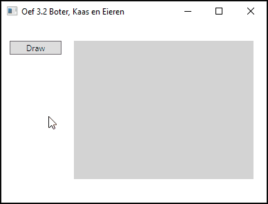
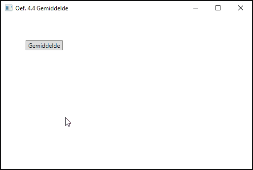

Hoofdstuk 3. Objecten en methoden voor eenvoudige graphics
|
Tip
|
we raden je aan om voorafgaand aan het schrijven van de programma’s eerst wat ruwe schetsen en berekeningen te maken. Je kunt een soortgelijk project gebruiken voor alle vragen, met een Canvas om te tekenen en een knop met bijbehorend event om het tekenen te initiëren. Experimenteer ook eens met een XAML-versie in plaats van een C#-versie, zoals uitgelegd in paragraaf 3.11. |
-
Schrijf een programma dat een rechthoekige driehoek tekent. Kies geschikte afmetingen.
-
Schrijf een programma dat een leeg boter-kaas-en-eierenbord tekent, opgebouwd uit lijnen.
 -
Ontwerp een simpel huis en schrijf een programma dat dit huis tekent.
-
Dit zijn wat gegevens voor de jaarlijkse regenval in het fictieve land Xanadu:
2009
150 cm
2010
175 cm
2011
120 cm
2012
130 cm
Geef deze gegevens weer in de vorm van een serie ingekleurde rechthoeken.
-
Schrijf een programma dat een roos van verschillend gekleurde concentrische cirkels tekent op het scherm. (De aanschaf van een pistool met zuignappijltjes om daarmee op het scherm te schieten is facultatief!)
-
Schrijf een programma dat in grote lijnen een gezicht tekent. Je kunt hierbij ellipsen gebruiken, zowel voor de omtrek van het gezicht, als voor de ogen, de oren, de neus en de mond.
Hoofdstuk 4. Variabelen en berekeningen
|
Tip
|
Gebruik bij onderstaande opgaven afwisselend Label- en TextBlock-elementen.
|
-
Breid het rechthoekprogramma van dit hoofdstuk uit naar een programma dat het volume van een blok berekent als de afmetingen van de drie zijden gegeven zijn.
-
Schrijf een programma om de omtrek, oppervlakte en het volume van een cirkel en een bol te berekenen. Voer hiervoor de volgende stappen uit.
-
Bereken voor de waarde:
double radius = 7.5;met behulp van toekenningsopdrachten de omtrek en oppervlakte van een cirkel en het volume van een bol, gebaseerd op dezelfde straal. Geef de resultaten weer in berichtvensters. In de uitvoer moet duidelijk in woorden worden aangegeven wat het resultaat is, alleen een getal is niet voldoende. Voor deze berekeningen heb je het getal π nodig, dat bij benadering gelijk is aan 3,14. C# heeft een constante
PI, waarin de waarde van π in meer decimalen is opgeslagen. Deze constante behoort tot de klasseMath. In diezelfde klasse vind je ook de functiePow(x,y)die een getal x tot de macht y verheft. De volgende formules laten het gebruik zien:circumference = 2 * Math.PI * radius; area = Math.PI * Math.Pow(radius, 2); volume = (4 * Math.PI / 3) * Math.Pow(radius, 3); -
Pas onderdeel a. zo aan dat er een tekstvak gebruikt wordt voor de straal, en labels voor de resultaten. Gebruik extra labels om de presentatie van je resultaten te verduidelijken.
-
-
Twee studenten nemen deel aan een C#-examen. Hun resultaten (een geheel aantal punten tussen 0 en 100) worden toegekend aan twee variabelen:
int outcomeStudent1 = 44; int outcomeStudent2 = 51;Schrijf een programma dat het gemiddelde cijfer berekent als een
double-waarde en dit cijfer op het scherm laat zien. Controleer je antwoord met een rekenmachine. -
Het examen van de vorige opgave wordt nu door een zeer precieze examinator nagekeken, die gehele getallen eerst omzet naar doubles alvorens het resultaat te berekenen. Controleer opnieuw je antwoord met een rekenmachine.
 -
Neem aan dat de inkomstenbelasting voor particulieren twintig procent bedraagt. Haal een inkomenswaarde uit een tekstvak op en bereken daarna de inkomstenbelasting en het inkomen na de belastinginhouding. Laat alle waarden met een duidelijke toelichting met behulp van labels op het scherm zien.
-
Gebruik het type
doublevoor het maken van een variabele die een temperatuur in graden Fahrenheit bevat en druk het equivalent in graden Celsius op het scherm af. De formule die je hierbij moet gebruiken is:celcius = (fahrenheit – 32) * 5 / 9; -
We hebben een aantal seconden aangeleverd gekregen:
int totalNumberOfSeconds = 2549;Schrijf een programma dat dit aantal omrekent naar uren, minuten en seconden. Werk een voorbeeld uit op papier voordat je het programma gaat schrijven. Gebruik één berichtvenster om de resultaten te laten zien, in de vorm:
H:0 M:42 S:29 -
Deze opgave gaat over elektrische weerstanden, die weerstand bieden aan een elektrische stroom die erdoorheen gaat. Deze weerstanden kunnen achter elkaar (in serie) of naast elkaar (parallel) geschakeld worden. In het eerste geval is de totale weerstand groter dan elk van de losse weerstanden, in het tweede geval kleiner. Dit kun je vergelijken met het koppelen van tuinslangen: aan het einde van twee slangen achter elkaar stroomt minder water per seconde naar buiten dan uit elke slang afzonderlijk; bij twee slangen naast elkaar juist meer.
Als de beginwaarden van de weerstanden gegeven zijn door:
double r1 = 4.7; double r2 = 6.8;bereken dan de serieweerstand, gegeven door:
series = r1 + r2;en de parallelweerstand gegeven door:
parallel = (r1 * r2) / (r1 + r2); -
We willen software maken voor een frisdrankautomaat. Dit zijn de gegevens: alle dranken kosten minder dan 2 euro en dat is ook de grootste munt die kan worden ingeworpen. Maak een programma dat bij een gegeven ingeworpen bedrag en prijs van het drankje het wisselgeld berekent met zo min mogelijk munten. Bijvoorbeeld bij:
int amountGiven = 100; int itemCost = 45;moet het resultaat een aantal berichtvensters (voor elke munt) zijn in de vorm:
Number of 1 euro coins is 0 Number of 50 cent coins is 1 Number of 20 cent coins is 0 Number of 10 cent coins is 0 Number of 5 cent coins is 1 Number of 2 cent coins is 0 Number of 1 cent coins is 0
Tipreken in eurocenten en maak goed gebruik van de %-operator. We gebruiken muntstukken van 1, 2, 5, 10, 20, 50 eurocent en 1 of 2 euro. -
Schrijf een programma dat het eindsaldo (:stem[e]) op een bankrekening berekent. Het beginsaldo (b), het aantal jaren (n), en de rente per jaar (r) kunnen variëren. Gebruik hierbij de formule:
\$e = b * (1 + r / 100)^n\$ -
Schrijf een programma dat een
int-getal omzet naar een binair getal. Het getal wordt via eenTextBoxingelezen en vervolgens is het binaire getal in een label terug te vinden. Beperk je tot getallen die tussen 0 en 255 liggen.
Hoofdstuk 5. Methoden en argumenten
|
Tip
|
Bouw om de methoden die je schrijft uit te proberen een simpele GUI met tekstvakken, labels en berichtvensters. Maak een knop waarmee je je programma kunt laten beginnen. |
De eerste opgaven hebben betrekking op void-methoden en op het doorgeven als waarde.
-
Schrijf een methode genaamd
ShowName, met één parameter van het type `string. Deze moet de opgegeven naam in een berichtvenster laten zien. -
Schrijf een methode genaamd
ShowNames, met twee parameters die je voornaam en je achternaam voorstellen. De methode moet je voornaam in een berichtvenster laten zien en daarna je achternaam in een ander berichtvenster. -
Schrijf een methode genaamd
ShowSalary, met twee integerparameters die het jaarsalaris van een werknemer en het aantal jaren dat deze gewerkt heeft voorstellen. De methode moet het totale inkomen over dat aantal jaren berekenen en dit tonen in een berichtvenster, aangenomen dat de werknemer elk jaar evenveel heeft verdiend. -
Schrijf een methode die een cirkel tekent bij gegeven coördinaten van het middelpunt en gegeven straal. De header moet zijn:
private void DrawCircle(Canvas drawArea, SolidColorBrush brush, double xCentre, double yCentre, double radius)Voorzie een drietal tekstvakken om het middelpunt en de straal in te geven. Na een druk op de knop verschijnt de cirkel.
-
Herschrijf de
DrawTriangle2-methode, waarbij je gebruikmaakt van de bestaande klasse Polygon (veelhoek). Zoek deze klasse op via de Help.Tipeen Polygon-object bevat een verzameling punten die samen een gesloten veelhoek definiëren. -
Schrijf een methode genaamd
DrawStreet, die een straat met huizen tekent en gebruikmaakt van de behandeldeDrawHouse-methode. In dit vraagstuk gaan we ervan uit dat een straat uit vier huizen bestaat en dat er tussen twee aangrenzende huizen een ruimte van twintig pixels zit. De argumenten leveren de plaats en de grootte van het meest linkse huis en deze zijn gelijk aan die vanDrawHouse. -
Schrijf een methode genaamd
DrawStreetInPerspective, met dezelfde argumenten als in de vorige opgave, maar met het verschil dat elk huis nu twintig procent kleiner is dan het huis links ernaast.
De volgende vraagstukken hebben betrekking op functiemethoden met argumenten die als waar-de worden doorgegeven.
-
Schrijf een functiemethode genaamd
CalculateEuroEquivalent, die bij een gegeven aantal dollars het aantal euro’s berekent. Een voorbeeld van een aanroep is:double euro = CalculateEuroEquivalent(37.50); // 37.5 dollarsZoek zelf de huidige wisselkoers op.
-
Schrijf een functiemethode genaamd
CalculateCubeVolume, die bij een gegeven lengte van een ribbe (de zijde van een kubus) het volume berekent. Een voorbeeld van een aanroep is:double volume = CalculateCubeVolume(1.2);